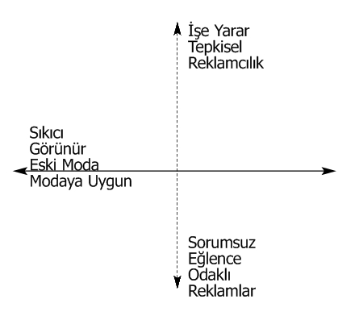

James Webb Young, İyi Fikir Bulma Tekniği kitabında iyi fikirler bulmak, iyi ve etkili reklamlar yapmak isteyen reklamcılara on yıllardır yol gösteren birçok şey söyledi. ‘Söylemediklerini’ ve ‘ima ettiklerini’ ise reklam dünyasının bir başka efsanevi ismi Jeremy Bullmore, More Bullmore adlı kitabındaki ‘Jim Young ne söyledi, ne söylemedi?’ başlıklı bölümde açıkladı.
James Webb Young 50 yıl boyunca reklamcılıkla uğraştı, öğretti ve yazdı. Bütün bu süre boyunca J. Walter Thompson'da ya çalıştı ya da onlara danışmanlık yaptı. Öğrettikleri ve yazdıkları o kadar mantıklıydı ki çalışmalarını -özellikle de How to Become an Advertising Man’i- şirket içi eğitimlerde kullandım. Bu çalışma, hayatına, 1978 yılında reklamcılıkla ilgili pek çok müthiş örnekle dolu bir sunum olarak başladı ve Majorca’da yapılan J. Walter Thompson Avrupa yöneticileri toplantısına kadar uzandı. Başlığında da görüldüğü gibi kitap baştan sonra maskülendir. Bu, Jim Young bu kitabı sadece erkekler için yazdığı için veya erkeklerin reklamcılığa kadınlardan daha uygun olduğunu düşündüğü için öyle değildir. Young hayatının büyük bir kısmında çok önemli bir reklam metni yazarı ve reklamcılıkta kadınları teşvik eden Helen Resor ile çalışmıştır. O zaman daha yaygın olduğu için maskülenliği her iki cinsi de temsil etmesi için kullanmıştır.
Bugün konu olarak Jim Young’ın How to Become an Advertising Man kitabını ele alıyorum. Kitabı pek çoğunuzun çok iyi bildiğini ve birçok kere de okuduğunu tahmin ediyorum. J. Walter Thompson ofislerinde çalışanların ne kadarının bu kitabı okuduğunu, hatta duyduğunu ise bilmiyorum, ancak Londra ofisini referans olarak alırsak oranın yüzde bir gibi çok düşük bir düzeyde olduğunu sanıyorum.
Jim Young’ın reklamcılıktaki müstesna insanlardan biri olduğuna ve özellikle bu kitabın konu ile ilgili şimdiye kadar yazılan en iyi -en kısa ve en basit- kitap olduğuna inanıyorum. Dahası, o bizim şirketi kurma ve dünya çapında üne kavuşturma konusunda Stanley Resor’dan sonra herkesten daha fazla sorumluluk üstlenmiştir.
Amacım Jim Young’ı bir aziz ilan etmek, Ogilvy & Mather’daki bazı kişilerin, çok başarılı ancak hata yapabilir kurucuları için yaptığına benzer şekilde, onu papa gibi hatasız bir kul konumuna yükseltmek değil. Bu sadece, Jim Young’ın bir profesyonel olarak bize çok faydası olacak önemli ve az kullanılan bir kaynak olup olmadığını anlamak için atılan bir ilk adımdır. Biz şirket olarak bir zamanlar ‘reklam üniversitesi’ olarak bilinmekten gurur duyarız. Özellikle son 10 yıla, bilgiyi aktarmak, teori geliştirmek ve pratik yapmak kadar, genelleme yapmak, teori ve genellemelerin sorgulanmasını, dönüştürülmesini, geçersiz kılınmasını ve geliştirilmesini teşvik etmek için de pek çok ajanstan daha sistematik bir şekilde çalıştık.
Yine de üniversiteler ve daha kolay ifade edilen disiplinlerin aksine reklamcılık konusunda ortak teoriler veya birikmiş bilgiler alanında hâlâ eksiklik bulunmaktadır. Çoğu zaman herkesin reklamcılık konusunda uzman olduğunu iddia etmesinden yakınırız: tüketici temsilcileri, bürokratlar, partilerde karşılaştığımız kişiler, tüketiciler veya 23 yaşındaki marka yöneticileri gibi. Belki de reklamcılığı, bu kişilerin kendilerini uzman görmesini sağlayacak kadar basitleştiriyoruz. Ve bu, bizim de uzman olmamamızdan kaynaklanıyor. Birinin alana dair az veya hatta sıfır eğitimle sadece birkaç yıldır reklam ajansında çalışıyor olması bana göre o kişiyi uzman yapmaz.
Dolayısıyla benim, aklınızı ve dikkatinizi Jim Young’ın kitabına çekmemin asıl amacı, düşünmeyi bırakıp bu adamın dediklerini sorgusuz sualsiz kabul etmemiz değildir, aksine çok açık bir şekildeanlatılan reklamcılık felsefesini alıp referans olarak kullanmamızı sağlamaktır. 1912 ve 1914 yılları arasında ne diyor, ne yapıyor ve ne yazıyordu? Unuttuğumuz bariz gerçekler ve yol gösterici kurallar vardı. O zamandan beri bunlara bir şeyler ekledik mi, eklediysek neler ekledik? Geçmişe yönelik iyi ve saygılı bir bakış ileriyi görüşümüze yardımcı olabilir, yaptıklarımız konusunda şu anda olduğumuzdan daha iyi olmamızı sağlayabilir mi?
Jim Young’ın kitabının önsözünde söylediği gibi: “Reklam adamı (advertising man) olmak ömür boyu devam eden bir süreçtir. Ben bu konuda 50 yıldır çalışıyorum ve hâlâ yolun sonunu görebilmiş değilim.” Bu sadece yapmacık bir alçakgönüllülük değil, Jim Young bunun doğru olduğunu biliyordu ve durum hâlâ öyle. Birinci bölümde ‘reklam adamı’ terimi ile ne demek istediğini açıklamaktadır:
“Gerçek ‘reklam adamı’, bu kitapta kullanıldığı anlamı ile, reklamcılara amaçlarına ulaşmak için reklamı nasıl kullanılacaklarını anlatacak kadar bilgisi, becerisi, deneyimi ve anlayışı olan kişidir.
Ve bunları yapmak için reklamdan yararlanan bir kişidir.”
Bu bölüme ‘Jim Young ne söyledi, ne söylemedi?’ adını verdim çünkü onun ima ettikleri, başka bir deyişle söylemedikleri, yaptıkları kadar aydınlatıcıdır. Ve bu tanım iyi bir örnektir. Hatırladığım süre boyunca bu şirkette müşteri grubuna veya planlama grubuna ya da proje grubuna çok önem verdik. Müşteri temsilcisinin ortaya çıkan üründen ve grubun başarısından sorumlu olmasına karar verdik ancak ondan her şeyde iyi olmasını beklemedik. Jim Young bu gibi varsayımlarda bulunmamıştır. ‘Reklam adamı’ndan bir birey olarak bahsetmektedir.
Üçüncü bölümde, ‘bilgi’ kelimesini almış, bunu reklamcının elde etmeye çalışması gerektiğini söylemiş ve aşağıdaki şekilde tanımlamıştır.
1. Satış teklifi bilgisi
2. Pazar bilgisi
3. Mesaj bilgisi
4. Mesaj taşıyıcı bilgi
5. İş kanalları bilgisi
6. Reklamın nasıl işlediğine ilişkin bilgi
7. Spesifik durum bilgisi
Genç bir adamın bu listeye “Bu özelliklere sadece Tanrı’nın sahip olabileceğini sanıyorum” şeklinde tepki verdiğinden bahsetmiştir.
Young buna ek olarak, “Eğer bu şekilde düşünüyorsanız günümüz reklamcılığında bu farklı kategorilerde size destek veren pek çok uzman olduğunu ve bu kişilerin güncel olaylar hakkında fikir edinmek için referans kitaplarına ve pek çok gelişmiş tekniğe sahip olduğunu hatırlatmak isterim” demiştir.
Reklam adamı için her zaman bir çıkış yolu olduğunu ve olacağını söylese de, hâlâ bir gruptan veya ekipten bahsetmemektedir. “Bu kategorilerde kendinizi alıştırmanız gereken hatta bazılarında uzmanlaşmanız gereken pek çok bilgi vardır” diye devam etmektedir.
Burada akılda kalmasını istediğim ilk soru şudur: “Medya, yaratıcılık ve planlama uzmanlarından oluşan müşteri grubu konseptinin gelişmesi, istemeden de olsa reklam adamının varoluş alanını daraltmış mıdır? Bugün, müşteri temsilcisinin rolü nedir? Müşteri temsilcisi reklamcılık konusunda yeterince bilgi sahibi midir? Değilse bu önemli midir?”Benim düşüncem bunun önemli olmadığı yönünde. Bugünkü müşteriler, eskiden olduğu gibi, (Jim Young’ın dediği gibi) “reklamcılara amaçlarına ulaşmak için reklamı nasıl kullanılacaklarını anlatacak kadar bilgisi, becerisi, deneyimi ve anlayışı olan” kişiyi (grubu değil) aramaktadır.
Tek kişilik grup konseptinin geri dönmesini savunmuyorum. Sadece daha çoğumuzun yaptığımızdan daha fazlasını bilmesi gerektiğini öne sürüyorum. Yani bir müşteri temsilcisinin
“Yarın için hemen bir grup toplantısı düzenleyip fikirlerimizi en kısa zamanda size ileteceğiz” demek zorunda kalmadan müşterisine bizzat tavsiyelerde bulunabilmesini öneriyorum. Her geçen gün daha fazla müşterinin doğrudan yaratıcı ekiple görüşmek istemesi bu yüzden olabilir mi?
Jim Young’ın söylemediği ilk şey: “Kendisi uzman olmayan bir kişinin yönetiminde birçok uzmandan oluşan bir müşteri grubu oluşturun.” Eğer bu şekilde düşünseydi kitaba bu adı vermezdi.
Pek çoğunuz Young’ın uzun yıllar boyunca, New York ofis dergilerinde kitap eleştirileri yazdığını bilirsiniz. Ve bu eleştiriler için ara başlığı hep “Reklamcılıkla ilgili en iyi kitaplar reklamcılıkla ilgili olmayanlardır” idi, çünkü Young’a göre iyi bir reklam adamının sadece reklamın her yönü ile ilgili değil, dışarıdaki gerçek dünya ile ilgili de bilgisi vardır. Kitabında da “Reklam adamı için faydalı olan bilgiye limit konamaz. Hatta, eğitimi ne kadar geniş ve akıl deposu ne kadar dolu olursa işinde de o kadar iyi olacaktır” demiş ve “Şu ana kadar bildiğim reklamcılıktaki her yaratıcı kişinin iki önemli özelliği vardı. İlki, ilgisini çekmeyecek hiçbir konu yoktu. İkincisi ise, her alanda araştırmacıydı” diye devam etmiştir.
Şu anda üretilen reklamlara baktığımda, en azından Britanya’da, çoğunun gerçek dünyadan izole bir şekilde yapıldığını görüyorum. Basın metinlerdeki düzyazı stili herhangi bir reklam metninden farksızdır. Reklam yaratıcıları gitgide tek bir konuya takılmaktadır: reklamlar… Eğer durum buysa, bunun iki sonucu olacaktır. İlki, reklama bakanlar sosyal, politik, kültürel ve ekonomik olarak dünyanın geri kalanının o kadar farkındadırlar ki yapılan reklam, markanın veya hizmetin daha büyük ve daha gerçek dünya ile bağlantısını kurmayı başaramayacaktır.
İkincisi de, taklit ve orijinallikten uzak reklamlar yaygınlaşacaktır. Bence reklamlar, başka reklamlardan çok fazla beslenmekte ve dışarıdaki daha büyük ve çok daha ilginç dünyadan ise hiçbir şey almamaktadır. Gitgide, tahminlerinde sosyal trendleri ve insan duygularını dikkate almayan ve hiç çalışmayan ekonomik tahmincilere benziyoruz.
Bazen bir başkası hakkında “O tam bir reklam profesyoneli” diyoruz ve bununla o kişinin reklamla ve müşterilerinin sorunları ile yaşadığını, yediğini ve uyuduğunu söylemeye çalışıyoruz. Reklamdan başka bir şey okumuyor, reklamdan başka bir şey konuşmuyor ve reklam müdürü ile golf oynuyor.
Jim Young’ın söylemediği şeylerden biri de onun bu gibi bir kişiyi profesyonel olarak değil, sadece dar fikirli bir amatör olarak göreceğidir. Onun için gerçek profesyonel ‘her alanda araştırmacıdır’, sosyal, politik ve kültürel her konuda. Filmler, televizyon, iyi ve kötü romanlar, biyografiler, özel dergiler hatta ilgi alanına girmeyen dedikodular, hem yerel hem de ulusal gazeteler… Jim Young’ın profesyoneli bütün bunları bilir ve hepsini yaptığı işle ilişkilendirir.
Bugünlerde Young’ın profesyonelini sadece her şeye hevesli biri olarak düşünmemiz mümkün müdür? İşçi ilişkileri, hükümet müdahaleleri, kakao çekirdeği ve paket malzemesi fiyatı ve arzı ile takıntılı olan müşterilerimizin onlardan daha fazla bilgi ve daha geniş bir dünya görüşü olan reklam danışmanlarını pek hoş karşılamaması mümkün müdür?
Şimdi ‘Satış teklifi bilgisi’ başlıklı bölüme geçelim:
Bir reklam, metin veya hikaye yazmak için kalemi elinize almadan önce...
1. Teklifin ne olacağı konusunda aklınız çok net olmalı.
2. Teklifinizin hitap ettiğiniz grubun ilgisini çekeceğinden emin olmalısınız.
Bugünlerde, ‘tepki’den çok ‘girdi’ anlamına geldiğinden hepimizin ‘teklif’ kelimesi ile ilgili şüpheleri var. Biraz iddialı olacak ancak Jim Young’ın da, mesaj veya teklif açısından değil de tüketicinin tepkisi açısından düşünmenin daha faydalı veya daha az tehlikeli olacağına katılacağına inanıyorum. Çünkü kitabında da içgüdüsel olarak bu şekilde düşündüğünü gösteren kanıtlar var. Tepki teorisini o kadar hafife almış ki önemini anlatamaya gerek bile duymamış.
Bu cesur iddiayı desteklemek için bir örnek vereyim. Mesaj konusunda dikkat çekmenin yeterli olmadığına parmak basıyor. Young, “müşterinin ‘a bu da ne?’ demesini sağlayacak ve potansiyel müşterinizin ilgi alanı ile ilgili hassas bir noktaya basacak şekilde dikkatlice hesaplanmış bir şey söylemeniz gerektiğini” söylüyor. Daha sonra da posta ile kitap satma işinde karşılaştırmalı test olarak kullandığı iki kitap sunuyor: ‘Muhasebe Prensipleri, J.C Bentley’ ve ‘Muhasebeci misiniz yoksa sadece memur mu?’
Okuyucuya bunlardan hangisinin daha fazla sipariş aldığını soruyor. Asıl cevabı vermiyor çünkü vermesine gerek yok. İkinci başlık bir mesaj veya bir teklif değil, sadece çok güçlü bir tepki oluşturan basit bir uyarıcı. Young’ın dediği gibi “Sunduklarınızla potansiyel müşterinizin istedikleri, ihtiyaç duydukları veya talep ettikleri arasında o kadar güçlü bir bağ kurmalısınız ki sonuçta müşteri ‘İşte bu tam bana göre’ demeli.” Yani tepki vermeli.
Dolayısıyla, Young’ın çalışmasındaki en güçlü ima ‘tepki teorisidir’ demek uygun olacaktır. Tekliflerine geri döneyim:
1. Teklifin ne olacağı konusunda aklınız çok net olmalı.
2. Teklifinizin hitap ettiğiniz grubun ilgisini çekeceğinden emin olmalısınız.
Burada ‘girdi’ yerine ‘tepki’nin ima edilen varsayımını bile kabul ederek bugün neyi tamamen kabul edeceğimizden emin olamıyorum.
Bu noktada bir yapımcının yeni kuşak bir film yönetmenine sinirli bir şekilde ne dediğini hatırlıyorum: “İyi bir filmin bir başı, ortası ve sonu olması gerektiğini kabul etmediğini mi söylüyorsun?” Yönetmenin buna cevabı: “Tabii ki kabul ediyorum ama o sıra ile değil.”
Young’ın ortaya koyduğu iki nokta bu noktada çok geçerli oluyor ama o sıra ile değil. Pazarımız ile ilgili daha fazla içgörü elde etmek için kalitatif görüşmeleri ve grup toplantılarını gitgide daha fazla kullandığımızdan teklifimizin ne olması gerektiğini daha sık ortaya çıkarıyoruz (birinci nokta); ancak sadece hitap ettiğimiz grup ile ilgili daha fazla bilgi edindikten sonra (ikinci nokta).
Gerçekte, süreç yüksek ihtimalle yarım daire şeklindedir: İkinci nokta ile başlayabilir, hipotez kurmak için birinci noktaya geri dönebilir, sonra bunu geçerli veya geçersiz kılmak için tekrar ikinci noktaya dönebilirsiniz. Sıra ne olursa olsun, amaç doğru olmalıdır: Young’ın daha sonra dediği gibi “Umarım teklifinizin tanımı ile pazarınızın tanımı arasındaki ilişkinin ne kadar yakın olduğunu anlarsınız.”
Kitap boyunca Young ‘pazar’ kelimesini ısrarlı bir şekilde ve belli bir anlamda kullanmıştır. Bu kelimeyi bizim kullandığımız gibi bira pazarı, kağıt havlu pazarı veya çorba pazarı anlamında değil, hedef kitle anlamında kullanmıştır. Bu benim en iyi zamanlarda bile çok fazla güvenmediğim bir tabirdir.
İnsanların standart demografiler konusunda açıkça şüpheci olmaya başlamalarından ve yaşam biçimlerinden konuşmaya başlamalarından çok önce Young, “Pazarı oluşturan önemli göstergeler gelir, yaş, eğitim, ev sahipliği gibi ölçülebilir faktörlerden çok, istatistiklerde kayıtlı olmayan zevk, ilgi veya alışkanlık gibi kalitatif faktörlerdir” demiştir.
Bu, şimdi bana her zamankinden daha doğru geliyor. Bir pazarı veya hedef kitleyi ‘C1, C2, 25-34 yaşları arasında çocuklu ev kadınları’ şeklinde tanımlamak anlamsız ve yararsız geliyor. Pazarınızın neden sizin pazarınız olduğunu anlamazsanız onları anlamayı veya onlara ilginç gelmeyi de kolay bulmayacaksınız.
J. Walter Thompson’ın Londra ofisinde, gerçek hayalgücü ve orijinalliği veda kartları tasarlarken gösterdiğimiz söylenir. Efsaneye göre yaratıcılar stratejiler, müşteri planlamacıları, müşteri yöneticileri ve müşterilerin öldürücü etkisinden kurtulduğunda yaratıcılık serbest kalmaktadır. Eğer bu doğru ise ve bunun bir sebebi varsa bunun yukarıdakinden farklı bir sebep olduğunu ve efsanenin tam tersi yönde olduğunu düşünüyorum. Veda kartlarını tasarlayan ve yazan kişilerin sınırsız özgürlüğü yoktur; hatta çok kısıtlı özgürlükleri vardır. Veda kartını belli bir bireye göre üretmelidirler. Şanslarına, bu bireyi çok iyi tanımaktadırlar. Herhangi birine A-B sosyoekonomik grubundan, 25-34 yaşları arasında, güneydoğu Britanya’da yaşayan, evli ve 2,4 çocuk sahibi biri için bir veda kartı yaz veya tasarla deseniz sonuç orijinal olmayacaktır.
Pazar konusuna geri dönersek, Young’ın bugün her zamankinden daha önemli olduğunu düşündüğüm bir konusu daha var.
‘Reklam kargaşası’ denilen sorundan hepimiz haberdarız. Ortalama bir Amerikalı ev kadınının öğleden önce 16,6 milyon ticari mesaja maruz kaldığı ile ilgili istatistiklerle boğuluyoruz. ‘Zihin payı’ gibi terimler kullanıyoruz (pek bir anlamı da yok ya). Bir bakıma bu araştırma sayesinde özellikle de Amerika’da şu aralar Jim Young’ın hiç duymadığı ve ‘ertesi gün hatırlama testi’ adı verilen bir araştırma sistemine büyük bir rağbet gösterilmektedir.
Bir reklam yayınladıktan sonraki gün Bayan Burke’ün elemanları işe koyulur ve reklamın yayınladığı zamanda programı seyrettiği söylenen belli sayıda kişiyi arar. Bu kişilerin bazı sorulara verdikleri cevaplar doğrultusunda belli bir ücret karşılığında Bayan Burke size reklamınızın o kategori için belirlenen ‘normu’ aşıp aşmadığını bildirecektir. Yani, eğer norm 24 ise ve siz 29 aldıysanız başarılısınız ancak eğer 19 aldıysanız işler zorda demektir. Bayan Burke ve elemanlarının sormadığı şey ise telefonu açan kişilerin (Jim Young’ın anlayışına göre) pazarınızda olup olmadığıdır.
Young’ın dediği gibi, “İnsanlar gazetede okumayı seçtikleri haberler gibi seyredecekleri ve dikkat edecekleri reklamları da seçerler. Her ikisi için de anında ‘ilgi çekici’ veya ‘ilgi çekici olmayan’ sınıflandırması yapabilirler. Reklamınızı, sunduğunuz şey için ‘pazarda’ olup olmamalarına göre ‘ilgi çekici’ olarak sınıflandıracaklardır.”
O zaman dikkat çekmenin ve dikkati muhafaza etmenin tek yolu ‘işte bu benim için’ tepkisini uyandırmaktır.
Young bu konuda “Zaman içinde belli bir anda çok nadir ürün veya teklifin evrensel çekiciliği vardır” demiştir.
Eğer pazarımız nüfusun yüzde onu ise ve nüfusun yarısı da ‘o televizyon programını’ izliyorsa bu, Bayan Burke’ün elemanlarının, zaten etkilemeye çalışmadığımız insanların yüzde 95’inin reklamımızı hatırlayıp hatırlamadığını çok pahalı bir şekilde bize söylediği anlamına gelmektedir.
Son olarak, Jim Young’ın söylemediklerine ilişkin bir başka yorum daha. Cahil veya bilgisiz olduğundan değil o zamanda söylenmesi gerekmediğinden söylenmemiş bir şey. ‘Yaratıcılık’ kelimesine geri dönelim. Bugünlerde pek çok ülkede reklam ajanslarının çoğunun ilk olarak yaratıcılıkla değerlendirildiklerini düşünüyorum. Ve bu görüşü destekleyen araştırmalar da vardır. Aşağıda gösterildiği gibi tek bir skala ve tek bir boyut vardır:
Sıkıcı Görünür
Eski Moda Modaya Uygun
Ödül yok Ödüller
Bu skalanın soluna ne kadar yakınsanız o kadar kötüsünüzdür ve sağına ne kadar yakınsanız da o kadar iyi. ‘Clio etkisi’ olarak adlandırılabilen ajanslara ilişkin bu görüşe müşteriler, potansiyel müşteriler, basın, gazeteci, tedarikçi ve belki de en güçlü olarak ajanslarda çalışan kişilerde rastlanmaktadır.
Jim Young’ın söylemediği -çünkü söylemesine gerek yoktu- bunun onun ajanslar hakkındaki görüşü olmadığıydı. Aklında farklı bir boyut vardı; tamamen farklı bir skala.
Aşağıdaki skaladaki diklemesine noktalı çizgi bence değerini kaybetmiştir. Üstte “İşe yarar. Tepkisel. Reklamcılık” vardır, altta da “Sorumsuz, Eğlendirme Odaklı, Reklamlar.” (Buraya cahil, amatör ve düşüncesiz de eklenebilir).
Reklamcılık gitgide sanki hiçbir fonksiyonu yokmuş gibi görülmektedir. Biz bile ‘yaratıcı ürünümüze’, sanki yapmış olduğumuz reklamlar kendi içlerinde nihai ürünmüş, bu reklamlar resim galerilerindeki tablolar gibi görülmeli ve değerlendirilmeliymiş gibi bakıyoruz. Jim Young’ın kitabında ‘yaratıcılık’ kelimesi çok nadir kullanılmaktadır. Kullandığında da verimliliğin eşanlamlısı gibi kullanılmaktadır.

Sidney Opera Binasını yargılamanın iki yolu vardır. İlki: Neye benzer? Estetik olarak hoş mu? Tasarım olarak veya mimari olarak orijinal ve yaratıcı mı? İkincisi: İşe yarar mı? Opera binası olarak işe yarıyor mu? Oditoryumlar doğru boyutlarda mı? Park yeri var mı? Sahnenin üzerinde dekorları saklamak için yeterli açıklık var mı? Akustik olarak tatmin edici mi?
Kendi yaptığımız işe baktığımızda sadece ilk soruları sorarız. Portföyümüzde nasıl görünüyor? Bizim için iyi bir reklam olacak mı? Bizi ‘yaratıcı’ gösterecek mi? Zamanı geldiğinde tabii ki “İşe yaradı mı?” diye sorarız. Müşterimizi daha başarılı yaptı mı? Nasıl yaptı?
Eminim Jim Young bunun karşısında dehşete düşmezse bile şaşkına dönerdi.
Yatay çizginin önemli olmadığını veya ortadan kalkacağını iddia etmiyorum. Yöneticiler olarak görevimizin reklamcılığı ve reklam ajanslarını değerlendirenlerin aklına dik çizgiyi yeniden sokmak olduğunu söylüyorum.
‘İşe yaradı mı?’ İşe yaradıysa yaratıcıdır. Pazarın aklında bir istek uyandırmıştır. Yerinde harcanan paradır. Reklamcılık da bu yüzden vardır.
Yatay çizgiyi tartışmaya gerek yoktur. Reklam ya yaratıcı ve orijinaldir ya da değildir. Reklamlarımızı seyreden müşteri olarak söyleyebileceğiniz tek şey budur.
Dik çizgi, yani verimlilik, görünmezdir. Eski bir söz olan “İyi reklam kendi adına konuşur” sözüne inanmak bu işte yapılacak en büyük hatadır.
Hayır, reklam kendi adına konuşmaz. Birileri, yani biz onun adına konuşmalıyız. Biri “Sorun buydu, bütçe buydu, rakipler buydu, pazar bunu düşünüyordu, bunu duymak istiyordu, bu şekilde söylemeyi düşündük, bu şekilde değiştirdik ve geliştirdik, sonuçta bu hale geldi ve satışlarda da bu oldu” demelidir.
J. Walter Thompson’u haritada bulmak isterseniz nerede olmak istediğimizi biliyorum: Sağ köşede, dik çizginin mümkün olduğunca üstünde ve yatay çizginin mümkün olduğunca en sağında. Ama bu sıra ile.
Doğası ve tüketicisi sebebiyle elimizdeki pek çok proje en açık anlamıyla ‘yaratıcı’ kampanyalar hazırlamamıza izin verir hatta talep eder. Bu fırsatların hiçbiri kaçırılmamalıdır.
Müşterilerimizin de, bizim de bunlara ihtiyacımız vardır. Ancak elimizdeki bazı projeler her zaman açıkça yaratıcılık beklemez. Ve biz de öyle yapmaya çalıştığımızda sorumsuz oluruz.
Her proje dik çizgide yüksekte olmalıdır. Her projenin ödül kazanacak bir reklamı olmasa da anlatacak iyi bir hikayesi olmalıdır.
Bazen bana bugünün dünyasında bu yaklaşımın, yani verimliliğin yaratıcı olmamak için bir mazeret olduğu, mahcup ve savunmacı olduğu söylenir. Ben buna inanmıyorum. Müşteriler ne için para ödüyor?
Kurallarını onaylamadığımız bir oyunu oynamaya devam edemeyiz.
James Webb Young’a geri dönelim: “Gerçek reklam adamı, bu kitapta kullanıldığı anlamı ile, reklamverenlere amaçlarına ulaşmak için reklamı nasıl kullanılacaklarını anlatacak kadar bilgisi, becerisi, deneyimi ve anlayışı olan kişidir.”
‘Amaçlarına ulaşmak’, işte asıl söz budur.
Dün ajanstaki kişilere yaratıcı kişi olmak ile işadamı olmak arasında bir seçim yapmaları söylendi. Jim Young’ın söylemediği son şey, böyle bir ayrım yapma gereksinimini kabul etmeyeceğidir ki, bende etmiyorum.